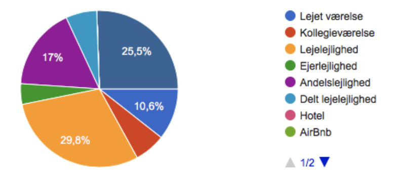
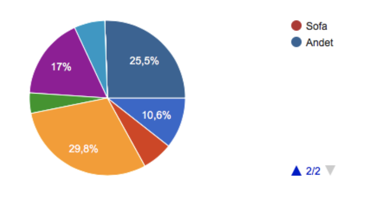
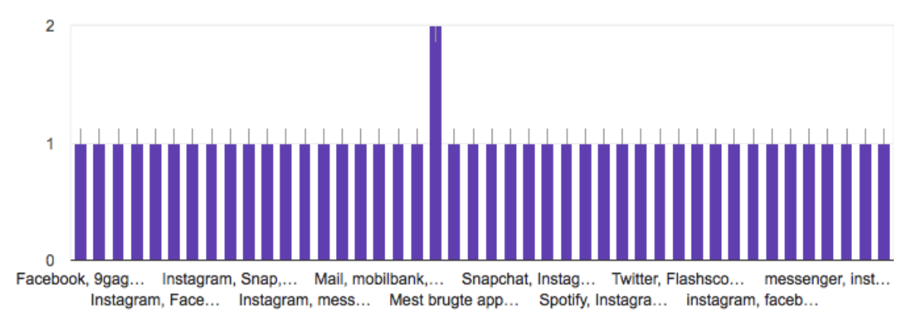

Brugerresearch
Køn:

Bopælskommune:

Bydel:
Boform:
 Forholdsstatus:
Børn:

Ungdomsuddannelse:
Andre uddannelser:
Studiejob:
Modersmål:

Foretrukket arbejdssprog:
Netadgang hjemme:
Rådihjedsbeløb pr. måned:

3 mest brugte apps på spartphone:
Hvilken desktop bruger du mest i dit arbejde?:
Smartphone:
Hvad bruger du din smartphone til?:
De fleste bruger smartphones til både underholdning og kommunikation.
Kommunikation: sms, opkald, at komme i kontakt med folk, arbejde.
Underholdning: sociale medier, til apps, tjekke nyheder, musik og podcast. kameraet, shopping.
Struktur/banking: Kalender, økonomi, mails, kostplan, arbejde.
Hvor bruger du sin smartphone?
Hvad foretrækker du at bruge din desktop til fremfor smartphone?:
Arbejde: skole, arbejde, skrive opgaver.
Underholdning: film, shopping, feriesøgning, gaming.
Placering: hjemme/skole.
Programmer: til bestemte programmer der ikke køre over smartphone.
Hvor ofte tjekker du din studiemail?:
Bruger du sundhedsappen på smartphone?:
Hvad mangler du på KEA?:
Intranet: App med skema.
Struktur: bedre overblik.
Brugerverden: Bedre kantine, SU venlige priser. Bedre lokaler til skolearbejde. Bedre internet. Bibliotek på studiestedet.
Fysiske behov: bedre udluftning, bedre indeklima.
Hvad er godt på KEA?:
Undervisning: Unge lærer med god energi. Differencering mellem klasse vis og fælles undervisning. Engagerede undervisere. Hands-on tilgangen. Fronter.
Sociale liv: studielivet, det sociale liv. Fredagsbar. Søde mennesker. Studiemiljøet. Atmosfæren. Sammenholdet.
Praktiske liv: Skoletiderne. Stikkontakter.
Uddannelse: Gode uddannelses muligheder. Kreative løsninger og frit arbejde. Fagene.
Hvad glæder du dig mest til i sin gang på KEA?:
Indlæring: At lære noget. Digitale medier. At få de ting vi lære under huden. Programmer til senere brug. At løse problemstillinger.
Projekter: Praktik. Idé til færdigt projekt. Arbejde med større projekter. Udvekslning.
Socialt: Lærer nye mennesker at kende. Få nye bekendskaber.
Privat: at bruge mine færdigheder udenfor skolen, på et evt. arbejde.
Hvad glæder du dig mindst til i din gang på KEA?:
Eksamen: Nervøsitet, eksamens angst.
Gruppearbejde: At være i gruppe med de samme mennesker hele tiden. Ufrivilligt gruppearbejde.
Fysiske forhold: dårlig lokaler.
Undervisning: fag der ikke interessere mig.
Psykiske forhold: Stressede situationer.
Hvad bruger du Lynda.com til?:
Undervisning: At lærer alt det underviserne ikke viser os. Opsummering.
Svar: søgning af spørgsmål jeg ikke kender svaret til.
Programmer: at få viden om de forskellige programmer. Lærer nye værktøjer.
Lektier.
Hvad bruger du Fronter til?:
Skema
Afleveringer
Information: Nyheder.
Hente filer: Undervisningsmaterialer.
Hvad bruger du kea.dk til?:
Ingenting
Navigation: til mail og fronter.
Information: studiealternativer osv.
Hvilke andre digitale platforme bruger du i forbindelse med dit studie?:
Youtube. Google. w3schools. one.com. Weshare. Facebook. Papercut. Colourbox. Adobe Creative Cloud. Validator. Dribble. Instagram. Behance. Messenger. Slack. Github. Trello.
Hvilke digitale platforme mangler du i forbindelse med dit studie?
KEA APP!
Hvilke erfaringer har du med at arbejde eller studere i udlandet?:
Erfaring: 13 ud af 46.
Ingen erfaring: 33 ud af 37.
Planlægger du at studere eller arbejde i udlandet?:
Nej: 25 ud af 47.
Ja: 11 ud af 47.
Måske: 11 ud af 47.
Hvor møder du de internationale studerende på KEA?:
Fredagsbar. Kantinen. På gange.
Hvor høj grad kunne du tænke dig at arbejde sammen med de internationale studerende?:
Hvor forestiller du dig, at du skal i praktik?:
Medieburau/reklameburau. Udlandet. DK.
Hvilke fordele kan du se ved at arbejde mere sammen med international linje på mmd?:
Engelske termer. Flere kontakter. Netværk.
Hvordan kan vi arbejde på tværs af linjer på mmd?:
Gruppearbejde på tværs af klasserne. Samme cases. Fælles undervisningsforløb. Projekter hvor vi gør brug af hinanden mere.
Supplerende kommentarer?:
KEA mangler en bedre database, som elever elever og lærer kan bruge til at slå ting op. Internationalitet på vores linje.